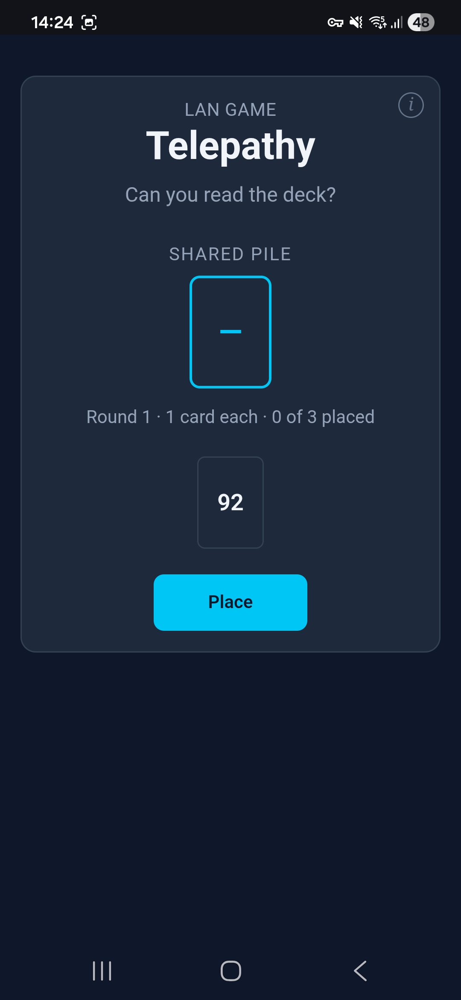
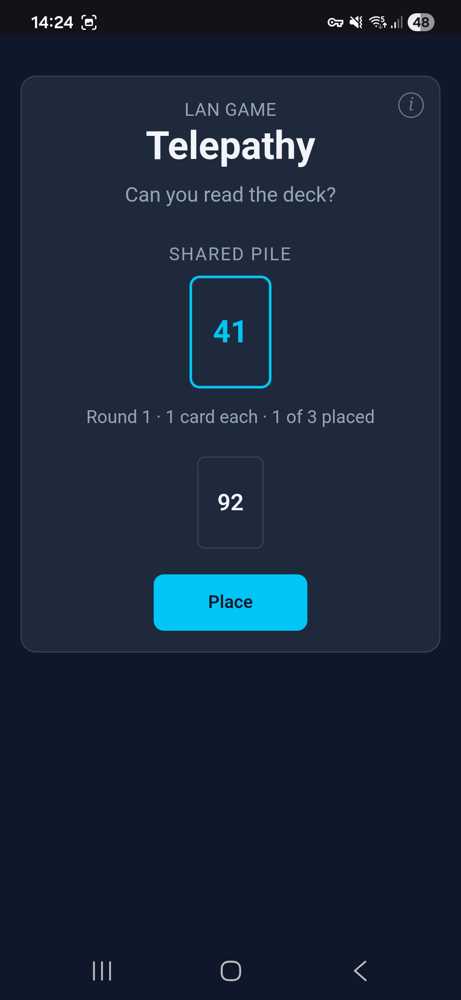
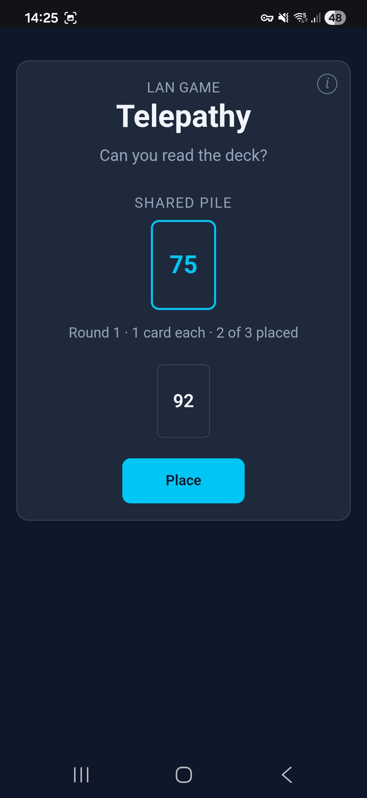
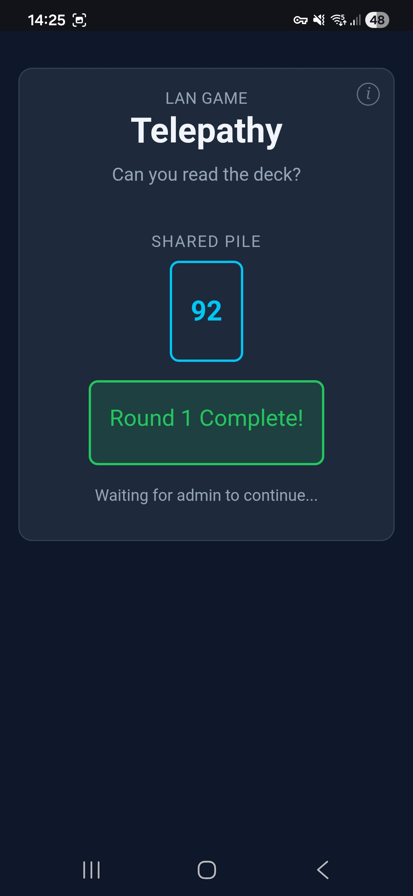
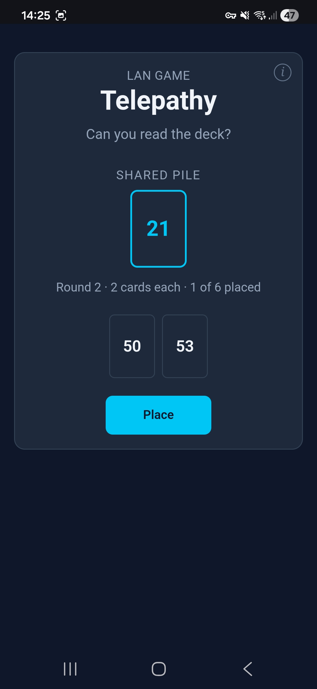
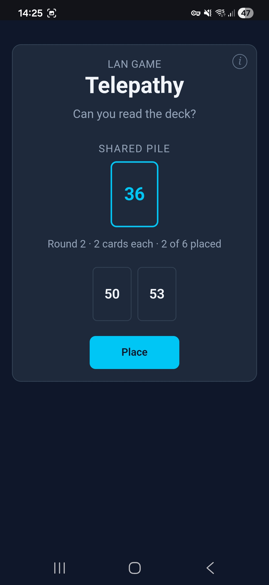
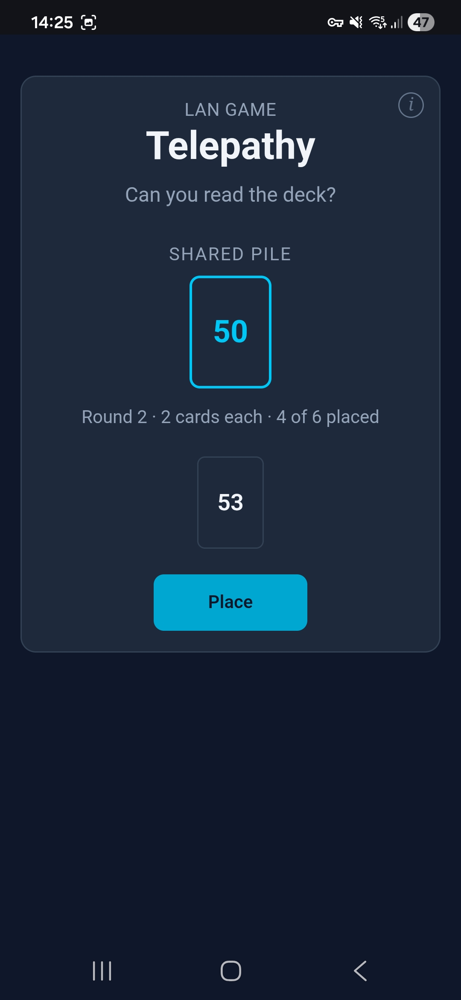
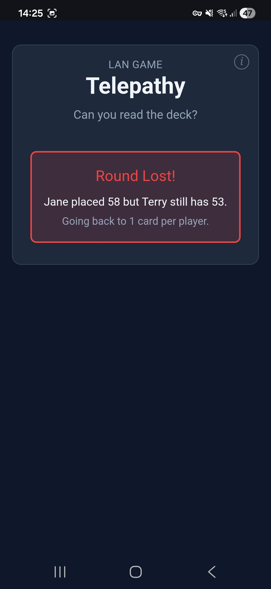

Telepathy
Can you read the deck?
A cooperative card game where players must place their numbered cards onto the shared pile in ascending order.
Players: 2+ (recommended 3–6). Upper limit of 100.
Tutorial
Round 1
Each player is dealt 1 card. You must stay completely silent — no talking, no signalling. Place your card onto the shared pile in ascending order by reading the table.

You've been dealt quite a high number, your best strategy might be to wait.

One player places their 41 card on the pile.

Another player places their 75 card on the pile. Your 92 is the last card remaining.

You place 92 safely to complete Round 1 and move onto Round 2.
Round 2
In round 2, each player gets 2 cards. Place them one at a time.

First card of round 2 placed successfully. Your cards are in the middle and very close together.

Two cards down in round 2, staying in order.
Three cards placed; players are cooperating well.

You correctly place your first card fourth.

Jane jumped in with 58 before you placed 53 and Round 2 was lost. Play moves back to Round 1
Rules
- Deal: Each player is dealt a hand of numbered cards (1–100).
- No Communication: Absolutely no discussion of cards or strategy during a round. This is the core of the game. Read the table, not each other.
- Rounds: Round 1 gives each player 1 card, round 2 gives 2 cards, and so on.
- Play: Press "Place" to put your lowest card onto the shared pile.
- Loss: If you place a card higher than another player's unplayed card, the round is lost immediately.
- Penalty: On a loss, the game drops back one round and everyone gets new cards.
- Goal: See how high you can go!